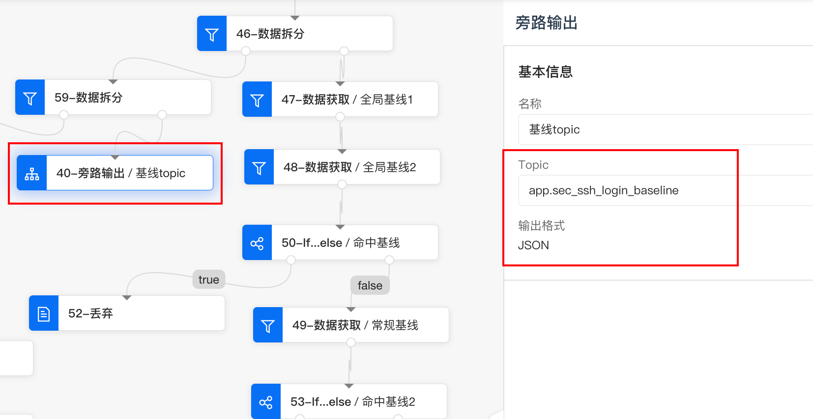
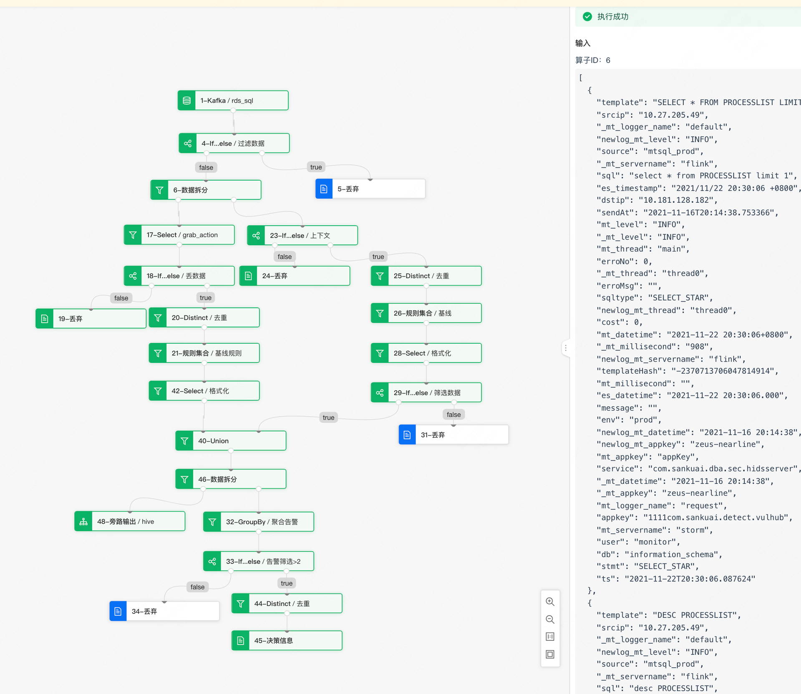
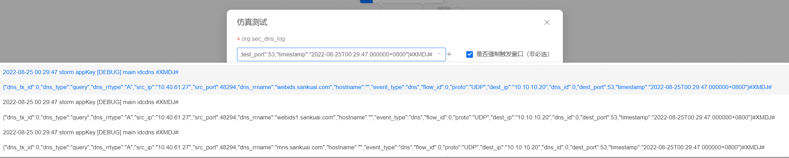

04 画布调试
1 旁路输出

将流转至该节点的数据全部输出至指定topic
【常见使用场景】
- 用于输出到离线hive，进行离线数据分析及策略调试
【配置相关】
如何将topic转为hive：
-
Zeus选择 旁路输出 组件，输出格式选择json

-
通过大数据平台接入kafka topic，将数据存储到hive中https://data.sankuai.com/exporter#/distribution


-
配置完后需要检查作业状态，正常20分钟后就能从hive里查数据了。配置示例

2 仿真测试

- 用于辅助业务和研发对于执行过程和执行逻辑的快速排查
【布控自助亮点】
- 仿真测试输入，可选择历史测试数据直接进行测试

- 执行失败的组件可点击查看具体报错情况
- 具体报错内容已由纯代码形式转换成了自然语言
- 组件本身配置不符合逻辑，由平台兜底逻辑通过执行的组件置为黄色，提示用户警告信息
3 自定义日志


- 用于辅助业务指定调试表达式/代码某部分内容
4 画布拨测（待上线）
- 支持用户自定义流量调用画布获取决策，判断结果是否满足用户诉求的任务配置，确保线上环境作业的有效性
5 表达式调试小工具（待上线）
- 支持用户在一个界面对aviator表达式的调试单测